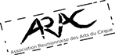
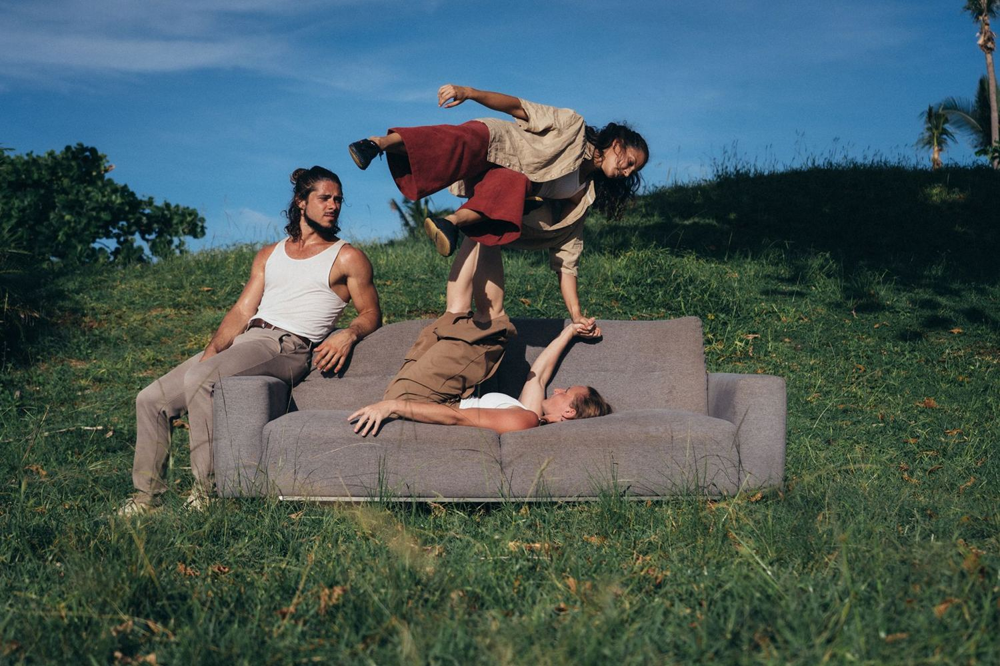
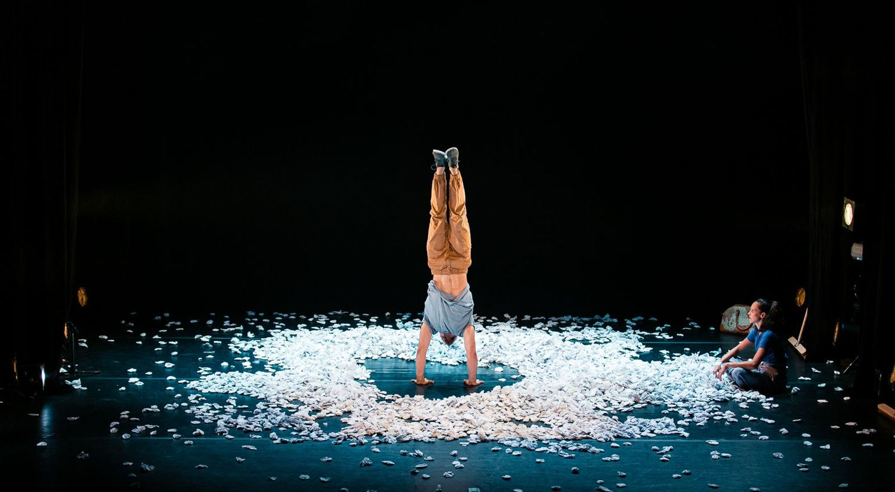
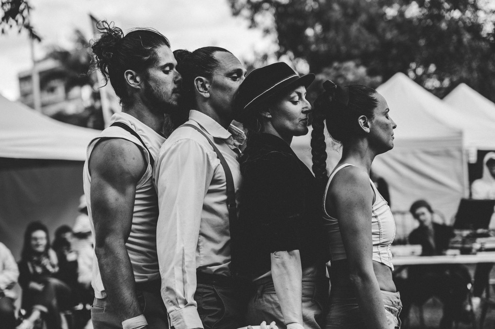

Un retour vers les sources créatrices de l'enfance.
Découvrir les spectacles ContacterCréée en 2017, la compagnie Ziguilé est née de la rencontre d'Émilie Smith, danseuse, et d'Éric Maufrois, acrobate de rue. Faute d'école de cirque à La Réunion, ils se forment au main à main et aux équilibres auprès des artistes de l'île et de passage. En créole, « ziguilé » évoque l'univers de l'enfance : le jeu, l'adresse, le partage et le dialogue entre les générations.

« Éteignez tout ! » en créole réunionnais.
L'équipe s'est enfermée trois jours dans une maison de la Plaine des Cafres, sans téléphone, ni écran, ni jeu. De cette expérience est né un spectacle joyeux et inventif : trois acrobates explorent un agrès inédit qui les relie en contrepoids. Parce qu'on n'est rien l'un sans les autres.

Un ring de boulettes de papier.
Au cœur d'un ring de boulettes de papier, deux enfants se chamaillent. Ils se portent, voltigent et enchaînent les acrobaties avec une énergie joyeuse. Entre danse et cirque, ce duo réveille l'âme d'enfant des adultes.

Le nouveau projet de la compagnie.
Entre acrobaties, danse et cirque, Vavang' est en cours de création avec le collectif Bat Kare.
En mars 2016, Émilie et Éric, tous deux réunionnais, travaillent pour la première fois en duo. Elle danseuse, lui acrobate de rue : ils se tournent naturellement vers le porté acrobatique. C'est avec Cirquons Flex qu'ils découvrent le cirque contemporain et acquièrent leurs bases en main à main.
Des artistes autodidactes, formés auprès des circassiens réunionnais et des artistes de passage. Et l'envie d'aller là où le public n'est pas toujours sensibilisé : résidences dans les quartiers et dans les hauts de l'île.
Pour « Ziguilé », créé en décembre 2019, ils font appel à Vincent Maillot (Cirquons Flex) pour la mise en scène. Le cirque contemporain leur permet d'allier prouesses techniques et propos artistique.
« Novices dans le monde du cirque, l'ARAC a été pour nous d'un grand soutien : une source d'informations et de rencontres, conviviale et pleine de bienveillance. »
Programmer, rencontrer, écrire à la compagnie.
#cirquecontemporain #portéacrobatique #SaintPaul
Photos © Siegfried Mardémoutou, Olivier Padre, Stéphane Gaillochon, Cédric Demaison